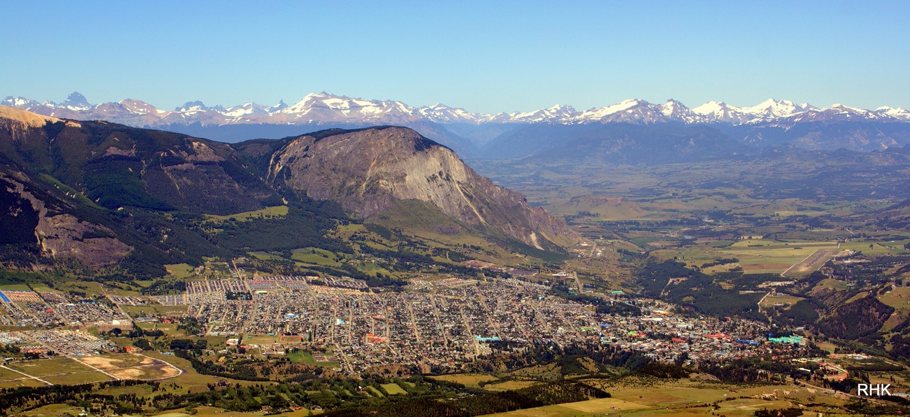

Antes de aterrizar, la ventana del avión ya muestra la Patagonia: estepa amarilla, cerros nevados y ríos que se pierden entre bosques. Si estás buscando cómo llegar a Coyhaique, la respuesta corta es en avión hasta Balmaceda y luego un tramo por tierra. Lo nuevo es el lugar donde bajas: desde el 5 de octubre de 2026 opera el nuevo terminal del Aeropuerto Balmaceda, el aeropuerto comercial de Coyhaique.
En esta guía te contamos qué cambió con el nuevo terminal, qué vuelos llegan hoy desde Santiago y Puerto Montt, cómo recorrer los 55 km hasta la ciudad y qué implica hacer el viaje completo por tierra.
El nuevo terminal del Aeropuerto Balmaceda
Conviene aclarar algo que se repite mucho: Coyhaique no construyó un aeropuerto en otro lugar. Lo que hizo fue ampliar y mejorar el Aeropuerto Balmaceda, que está en la localidad del mismo nombre, a unos 55 km de la ciudad. La prensa lo bautizó como el "nuevo aeropuerto de Coyhaique", pero el aeropuerto es el mismo; lo que se estrenó fue un terminal de pasajeros mucho más grande.
La obra forma parte de la concesión "Red Aeroportuaria Austral" del Ministerio de Obras Públicas, la primera obra concesionada de la región, adjudicada al Consorcio Austral de Aeropuertos por 25 años. Los trabajos comenzaron en mayo de 2023. En abril de 2026 el MOP informó un 85% de avance y todavía proyectaba la puesta en servicio para el primer semestre de 2027, pero los plazos se adelantaron: en agosto de 2026 se entregó el terminal en puesta en servicio provisoria y, tras la marcha blanca, comenzó a operar el 5 de octubre de 2026.
Las cifras del nuevo terminal
| Elemento | Antes | Ahora |
|---|---|---|
| Superficie del terminal de pasajeros | 2.400 m² | 12.391 m² (unas 5 veces más) |
| Puentes de embarque | 2 | 5 |
| Estacionamientos para aeronaves comerciales | — | 6 |
| Estacionamientos para aviación general | — | 13 |
| Estacionamientos para vehículos | — | 100 |
El terminal suma salón VIP y una oferta comercial con gastronomía y artesanía local. La prensa habla de una capacidad de más de 1 millón de pasajeros al año, y el MOP proyecta una demanda de 1,2 millones. La inversión supera los US$50 millones, según la prensa de 2026.
Hay un cambio menos visible que puede importar más a quien viaja: la Dirección de Aeropuertos está normalizando el área de movimiento e instalando un sistema de ayuda a la aproximación y el aterrizaje con baja visibilidad. El objetivo es reducir las suspensiones de vuelos por mal tiempo, algo habitual en la Patagonia.
¿Vuelos internacionales? El terminal tiene categoría para viajes internacionales, pero hoy no hay rutas internacionales confirmadas. Emol mencionó como posibilidad "a mediano plazo" un vuelo chárter desde São Paulo. Para llegar desde el extranjero, lo normal sigue siendo conectar en Santiago o Puerto Montt.
Vuelos a Coyhaique desde Santiago y Puerto Montt
El código del aeropuerto es BBA (Balmaceda). Estas son las rutas que hoy permiten llegar:
- Desde Santiago: LATAM y Sky tienen vuelo directo de unas 2 horas y 20 minutos. LATAM publicaba tarifas promocionales desde unos $48.000 a $62.000 para septiembre a noviembre de 2026; tómalas como referencia y revisa el precio del día.
- Desde Puerto Montt: vuelan Sky, JetSMART y LATAM, con un trayecto de cerca de 1 hora y 22 minutos. Según Skyscanner, en febrero de 2026 había unas 38 frecuencias semanales.
- Desde Temuco: Sky anunció una ruta directa de temporada para el verano de 2027. Revisa los detalles con la aerolínea.
Si piensas volar con JetSMART desde Santiago, confirma en su sitio que la ruta directa a Balmaceda esté operando: las fuentes no coinciden.
Emol resumió el viaje en una frase útil para planificar: "poco más de 2 horas hasta Balmaceda y 1 hora adicional por tierra".
Del aeropuerto a Coyhaique: los 55 km finales
Balmaceda está a unos 55 km de Coyhaique, cerca de una hora por tierra. Es un trayecto corto, pero en la Patagonia conviene tener resuelto el traslado antes de aterrizar, sobre todo si llegas en el último vuelo del día o en invierno, cuando puede haber nieve y heladas.
Quizás veas en el mapa el Aeródromo Teniente Vidal, junto a la ciudad, a unos 4 o 5 km. Es un aeródromo pequeño, con una pista de unos 1.548 m, y no es el que reciben los vuelos comerciales desde Santiago y Puerto Montt. Tampoco existe un proyecto oficial para trasladarlo ni reemplazarlo.

Cómo llegar a Coyhaique por tierra
Coyhaique está a casi 1.700 km de Santiago, a más de 30 horas en auto, según Emol. Hay dos caminos:
- Por la Carretera Austral (Ruta 7): desde Puerto Montt hacia el sur, con transbordadores en el camino, como el cruce corto Caleta La Arena–Caleta Puelche (unos 30 minutos) y el de Hornopirén–Caleta Gonzalo (unas 5 horas, en temporada). Es el viaje más escénico y el que se vive sin apuro. Te lo contamos en detalle en nuestra guía de la Carretera Austral.
- Cruzando por Argentina: la alternativa para quienes prefieren evitar los transbordadores.
Una combinación que funciona bien: volar a Balmaceda, arrendar un vehículo y recorrer la región por tierra. Así puedes llegar a las Catedrales de Mármol, a unos 220 km al sur, o subir en invierno al centro de ski El Fraile, a 29 km de la ciudad.
Preguntas frecuentes
¿Cuál es el aeropuerto de Coyhaique?
El Aeropuerto Balmaceda (BBA), a unos 55 km de la ciudad. Desde el 5 de octubre de 2026 opera con un nuevo terminal de 12.391 m².
¿Cuánto dura el vuelo de Santiago a Coyhaique?
El vuelo directo de LATAM o Sky a Balmaceda dura unas 2 horas y 20 minutos. Súmale cerca de una hora por tierra hasta la ciudad.
¿Hay vuelos internacionales a Balmaceda?
No por ahora. El terminal tiene categoría internacional, pero no hay rutas internacionales confirmadas.
¿Se puede llegar a Coyhaique en auto desde Santiago?
Sí. Son casi 1.700 km y más de 30 horas de manejo, por la Carretera Austral con transbordadores o cruzando por Argentina.
Llegar para quedarse
Con un terminal más grande y vuelos de poco más de dos horas desde Santiago, Aysén queda más cerca de lo que parece. Si sueñas con un lugar propio frente a un río patagónico, en Inmobiliaria El Roble tenemos parcelas con rol propio y opción de crédito directo: Horizontes de Mañihuales, frente al río Mañihuales, y Parcelas Don Guillermo, frente al río Emperador Guillermo, en plena Carretera Austral. Conoce todos nuestros proyectos.
Fuentes
- Ministerio del Interior, 05-10-2026
- Radio Agricultura, 05-10-2026
- MOP, 30-04-2026
- The Clinic, 25-08-2026
- CNN Chile, agosto de 2026
- Emol, 13-10-2026
- Emol, 19-07-2026
- Infraestructura Pública, Red Aeroportuaria Austral
- LATAM, vuelos Santiago–Balmaceda
- Skyscanner, Puerto Montt–Balmaceda, febrero de 2026
- Mediabanco, ruta Temuco–Balmaceda
- Wikipedia, Teniente Vidal Airfield
- Wikipedia, Carretera Austral